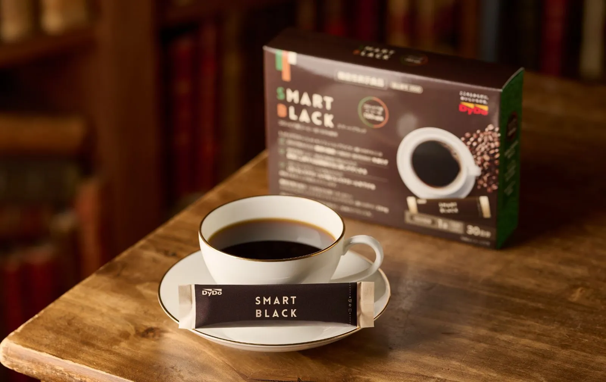

01 / 食後のラッシュ集めて、届けて、
集めて、届けて、
街をまわそう。
0お届け60秒
血中の糖
脂肪の蓄積
LDLの滞留
あなた■ 筋肉工場黄色をここへ脂肪の貯蔵庫蓄積 0◆ 肝臓紫をここへ
3 COMBO!
荷物 0 / 8
↓
街で起きた変化
3D画面を読み込めませんでした。
☝ タップで移動・近づくだけでお届け
1 / 3毎日の一杯で、３つの対策
機能性関与成分HMPAの研究報告に基づきます。継続摂取を前提とし、ゲームの変化を再現するものではありません。
はじめての方限定・お一人様１箱限りいつもの一杯を、
いつもの一杯を、
スマートブラックに。

定期初回
半額
半額
通常価格 6,480円（税込）
3,240円（税込）
1日1本。お湯でも水でも、おいしく。
約30日分 ＋ 3本プレゼント
送料無料購入回数の縛りなし
定期２回目以降は5,832円（税込）。
お届け・休止・解約の詳細は申込ページをご確認ください。
初回プランでお試しする ↗
食生活は、主食、主菜、副菜を基本に、食事のバランスを。